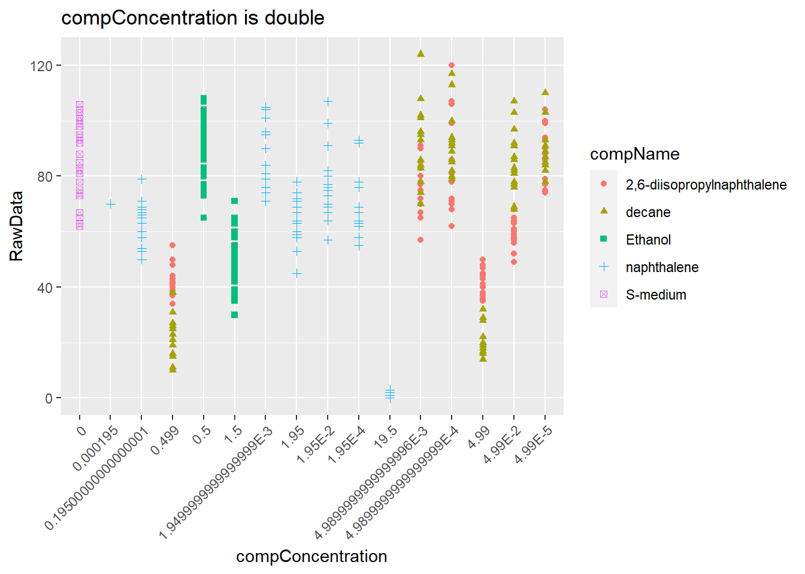
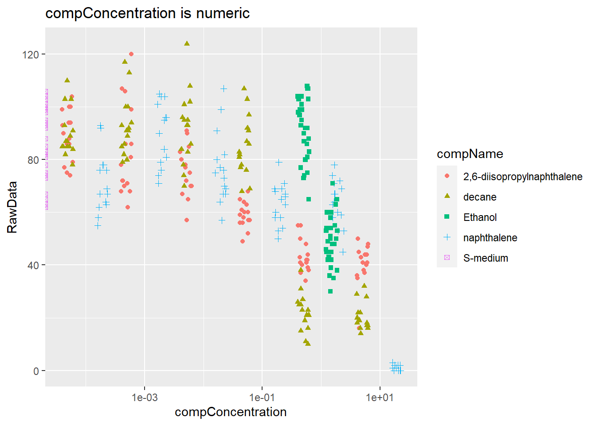

Chapter 2 Introduction
You can label chapter and section titles using {#label} after them, e.g., we can reference Chapter 2. If you do not manually label them, there will be automatic labels anyway, e.g., Chapter ??.
Figures and tables with captions will be placed in figure and table environments, respectively.
par(mar = c(4, 4, .1, .1))
plot(pressure, type = 'b', pch = 19)
Figure 2.1: Here is a nice figure!
Reference a figure by its code chunk label with the fig: prefix, e.g., see Figure 2.1. Similarly, you can reference tables generated from knitr::kable(), e.g., see Table 2.1.
knitr::kable(
head(iris, 20), caption = 'Here is a nice table!',
booktabs = TRUE
)| Sepal.Length | Sepal.Width | Petal.Length | Petal.Width | Species |
|---|---|---|---|---|
| 5.1 | 3.5 | 1.4 | 0.2 | setosa |
| 4.9 | 3.0 | 1.4 | 0.2 | setosa |
| 4.7 | 3.2 | 1.3 | 0.2 | setosa |
| 4.6 | 3.1 | 1.5 | 0.2 | setosa |
| 5.0 | 3.6 | 1.4 | 0.2 | setosa |
| 5.4 | 3.9 | 1.7 | 0.4 | setosa |
| 4.6 | 3.4 | 1.4 | 0.3 | setosa |
| 5.0 | 3.4 | 1.5 | 0.2 | setosa |
| 4.4 | 2.9 | 1.4 | 0.2 | setosa |
| 4.9 | 3.1 | 1.5 | 0.1 | setosa |
| 5.4 | 3.7 | 1.5 | 0.2 | setosa |
| 4.8 | 3.4 | 1.6 | 0.2 | setosa |
| 4.8 | 3.0 | 1.4 | 0.1 | setosa |
| 4.3 | 3.0 | 1.1 | 0.1 | setosa |
| 5.8 | 4.0 | 1.2 | 0.2 | setosa |
| 5.7 | 4.4 | 1.5 | 0.4 | setosa |
| 5.4 | 3.9 | 1.3 | 0.4 | setosa |
| 5.1 | 3.5 | 1.4 | 0.3 | setosa |
| 5.7 | 3.8 | 1.7 | 0.3 | setosa |
| 5.1 | 3.8 | 1.5 | 0.3 | setosa |
You can write citations, too. For example, we are using the bookdown package (Xie 2021) in this sample book, which was built on top of R Markdown and knitr (Xie 2015).
C. elegans plate experiment
(Again: work out this exercise in a Rmarkdown file in your portfolio-project. You will need this later to put in your portfolio)
The data for this exercise was kindly supplied by J. Louter (INT/ILC) and was derived from an experiment in which adult C.elegans nematodes were exposed to varying concentrations of different compounds. The variables RawData (the outcome - number of offspring counted as an integer value, after incubation time), compName (the generic name of the compound/chemical), the compConcentration (the concentration of the compound), and the expType are the most important variables in this dataset.
A typical analysis with this data would be to run a dose-response analysis using a log-logistic model with estimates for the maximal, the minimal, the IC50 concentration and the slope at IC50. We will not go into the details but a good package to run such computations and create graphs in R is the {drc} package. See: and:. In the exercise below we will create some visualizations using {ggplot2}.
A. Review the following Excel file in the ./data/CE.LIQ.FLOW.062_Tidydata.xlsx (it’s here), by opening the file in Excel. See if you can spot anything peculiar about this file. Do not edit the file in any way. Just close it when you are done. (Annoyingly, Excel asks you to save your changes, even if you did not touch anything in the file: why is this cumbersome?)
!!!Datum wordt weergegeven met #### en veel vergeshillende sheet welke on overzichtelijk zijn
B. Open the file in R, using the {readxl} package.
library(tidyverse)## -- Attaching packages --------------------------------------- tidyverse 1.3.1 --## v ggplot2 3.3.3 v purrr 0.3.4
## v tibble 3.1.1 v dplyr 1.0.6
## v tidyr 1.1.3 v stringr 1.4.0
## v readr 1.4.0 v forcats 0.5.1## -- Conflicts ------------------------------------------ tidyverse_conflicts() --
## x dplyr::filter() masks stats::filter()
## x dplyr::lag() masks stats::lag()library(readxl)
ce_liq_flow_062 <- read_excel("CE.LIQ.FLOW.062_Tidydata.xlsx", sheet = 1)
#werkt wel in console niet in scriptC. Inspect the data types of columns RawData, compName and compConcentration. What types would you expect from the experimental description above. Have the data types been correctly assigned during the importing of the data into R?
typeof(ce_liq_flow_062$RawData)## [1] "double"typeof(ce_liq_flow_062$compName)## [1] "character"typeof(ce_liq_flow_062$compConcentration)## [1] "character"compConcentration should be numeric
D. Create a graph displaying a scatterplot for the CE.LIQ.FLOW.062_Tidydata.xlsx data, for the different compounds and the varying concentrations. Put the compConcentration on the x-axis, the DataRaw counts on the y-axis and assign a colour to each level in compName. Assign a different symbol (shape =) to each level in the expType variable. Try fixing the labels of the x-axis so that we can read them.
ggplot(data = ce_liq_flow_062, aes(x = compConcentration, y = RawData)) +
geom_point(aes(colour = compName, shape = compName)) +
scale_x_discrete(guide = guide_axis(angle = 45)) +
labs(title = "compConcentration is double")## Warning: Removed 5 rows containing missing values (geom_point). https://www.datanovia.com/en/blog/ggplot-point-shapes-best-tips/ https://stackoverflow.com/questions/1330989/rotating-and-spacing-axis-labels-in-ggplot2
E. When creating the plot under C), what happened with the ordering of the x-axis labels. Explain why this happens. Look at the data-type of the compConcentration column in the data again to find a clue. ze worden niet afgerond? omdat het characters zijn?
F. Correct the data-type of compConcentration to numeric and than look at the graph again. Use a log10 transformation on the x-axis to get a clear graph. Also, add a bit of jitter to the points in the graph so that points are not overlapping.
ce_liq_flow_062$compConcentration <- as.numeric(as.character(ce_liq_flow_062$compConcentration))## Warning: NAs introduced by coerciontypeof(ce_liq_flow_062$compConcentration)## [1] "double"log10_scatter <-ggplot(data = ce_liq_flow_062, aes(x = compConcentration, y = RawData)) +
geom_point(position=position_jitter(width=.1,height=0),aes(colour = compName, shape = compName)) +
scale_x_discrete(guide = guide_axis(angle = 45))+
labs(title = "compConcentration is numeric")
log10_scatter + scale_x_log10()## Scale for 'x' is already present. Adding another scale for 'x', which will
## replace the existing scale.## Warning: Transformation introduced infinite values in continuous x-axis## Warning: Removed 6 rows containing missing values (geom_point).
G.Fill in: (G) The positive control for this experiments is naphthale (H) The negative control for this experiment is S-medium.
I.Think about how you would analyze this experiment to learn whether there is indeed an effect of different concentrations on offspring count and whether the different compounds have a different curve (IC50). Write down you analysis as a step-wise plan
- kijk of de data normaal verdeeld is
- voer de bijbehorende statistische toets uit
J.Normalize the data for the controlNegative in such a way that the mean value for controlNegative is exactly equal to 1 and that all other values are expressed as a fraction thereof. Rerun your graphs with the normalized data.
H.Why would you want to take the step under J?
#Open Peer Review
This exercise is about identifying reproducibility issues in a scientific publication. We use the criteria for reproduciblity that are publically available via here
Transparency Criteria Definition Response Type Study Purpose A concise statement in the introduction of the article, often in the last paragraph, that establishes the reason the research was conducted. Also called the study objective. Binary Data Availability Statement A statement, in an individual section offset from the main body of text, that explains how or if one can access a study’s data. The title of the section may vary, but it must explicitly mention data; it is therefore distinct from a supplementary materials section. Binary Data Location Where the article’s data can be accessed, either raw or processed. Found Value Study Location Author has stated in the methods section where the study took place or the data’s country/region of origin. Binary; Found Value Author Review The professionalism of the contact information that the author has provided in the manuscript. Found Value Ethics Statement A statement within the manuscript indicating any ethical concerns, including the presence of sensitive data. Binary Funding Statement A statement within the manuscript indicating whether or not the authors received funding for their research. Binary Code Availability Authors have shared access to the most updated code that they used in their study, including code used for analysis. Binary Table clarification The Transparency Criteria are criteria you need to score the article of your choice for. Read them carefully and discuss with another course participant if you do not understand them. Each Tranparance criterion comes with a Definition that explains the criterion in more details. These descriptions are particularly helpful to understand what the criterium entails and what to look for in the article. The Response Type is the actual score
In this assisgment you need to find a scientific article yourself, using PubMed or another database or repository. Use only Open Access articles. Having an article in hand, go over the table above and score the article according the criteria. Be sure to select a primary article that presents a study using data from experimental work . This can be laboratory experiments or in silico experiments. Reviews and meta analysis are not suitable for this assignment
To guide your search you can choose between these topics
“Coronavirus / COVID-19” “The effects of compound on an organism / Toxicology” “The effectiveness of a drug or treatment in an animal study” “The effects of a compound investigated in a cell or organoid system”
https://www.biorxiv.org/content/10.1101/2020.10.02.322917v2.full
Study Purpose : er wordt in de samenvatting kort uitgelegd wat voor belanger er is om dit onderzoek uit te voeren Data Availability Statement: niet aanwezig Data Location: er wordt wel bescreven hoe de data er uit moet zien en er zijn verwijzingen naar waar artikelen waar in wordt beschrevenhoe de data verzameld is. Er staat niet waar je de gebruikte data terug kan vinden. Study Location: in de materiaal en methode sectie staat geen informatie over waar het onderzoek is uitgevoerd Author Review: de gegevens van de auteurs zijn niet makkelij te verkrijgen, de namen van de auteurs staan boven aan het artkel maar verdere contact gegevens staan niet op de pagina zelf. Ethics Statement: in de introductie staat kort iets over de ethiek Funding Statement: er wordt niets gezegt over de financiering Code Availability: er wordt geen code gedeeld in het artikel
TIPS If you do not know where to start your literature search start here: https://www.biorxiv.org/ This assignment is not about the topic you select, so try to do that quickly You may want to cheat and select an article that scores TRUE on the Data Availability Statement, because that enables you to use the this article again in one of the next assignments. PART 1 To complete part 1, execute activity A to G
Initiate an empty RMarkdown file in your RStudio environment and provide author and title (after the title of this exercise) Search for a primary Open Access article on one of the above listed topics, using Pubmed Central Read the article diagonally to check if is indeed a primary article describing emperical scientific findings. Include the reference to this article in your Rmd file Score the article on the basis of the above ‘Repita’ criteria Write an Rmarkdown report on your findings, including the table above and some information about the article such as general aim, short methods and results. If data is available, try including some Store the source Rmd and knitted HTML in a folder called ‘Rmd’ in your course RStudio project. You will need it again later in the course PART 2 To complete this assignment you will have to execute activity H to P
Using the OSF website, select a project that addresses an aspect of the SARS-Cov-2 virus. Select a project that has a dataset and R-code shared in the project environment. Have a look at the code. Describe in your own words what the code intents to achieve. In terms of readibility of the code, how would you grade (1(very bad)-5(very good)) the code available. Download the code and the data to a new RStudio project Run the script or code that is available to reproduce at least 1 figure When you encounter errors or flaws in the script, try fixing them and record your changes. Taken together on a scale from 1 (very hard) to 5 (very easy), how much effort did it take you to reproduce the visualization from the project, report or article Generate an RMarkdown script that contains the details on the project you selected, the code you used to create the visualization and your score for reproducibility. resource: https://www.researchgate.net/publication/340244621_Reproducibility_and_reporting_practices_in_COVID-19_preprint_manuscripts/fulltext/5e81f9fd92851caef4ae37ba/Reproducibility-and-reporting-practices-in-COVID-19-preprint-manuscripts.pdf
#https://osf.io/gkcn7/
library(readxl)
#salmonellacfu <- read_excel("salmonella")